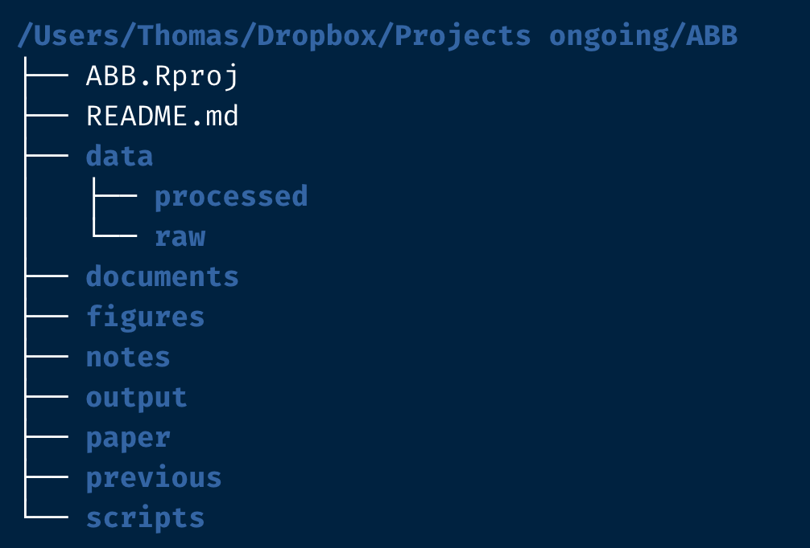
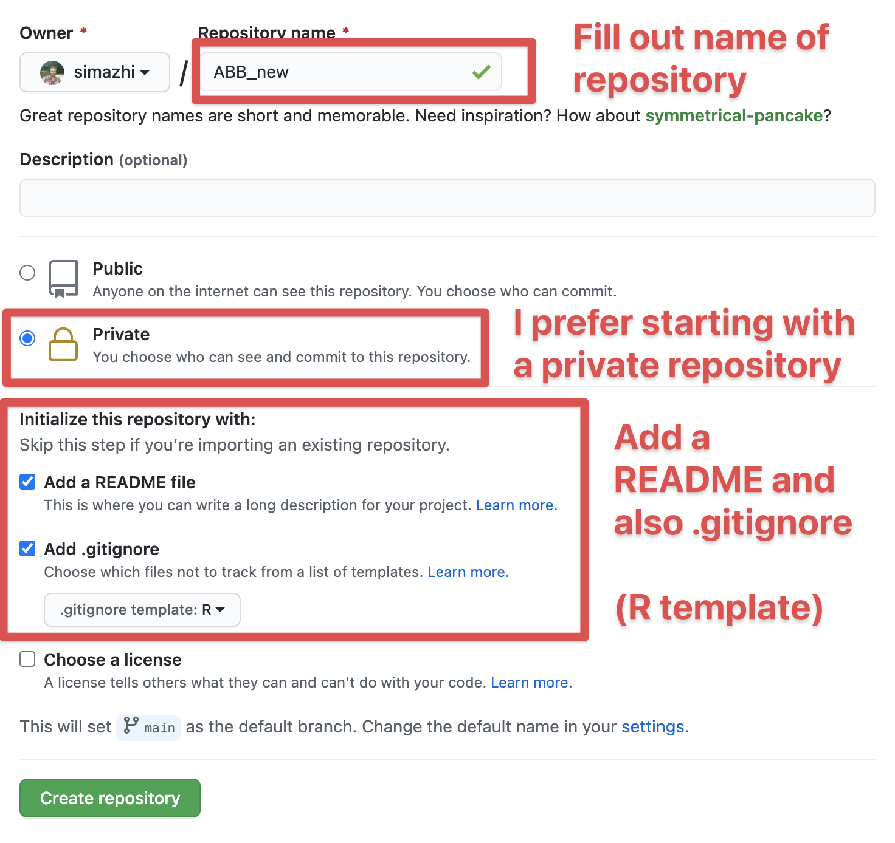
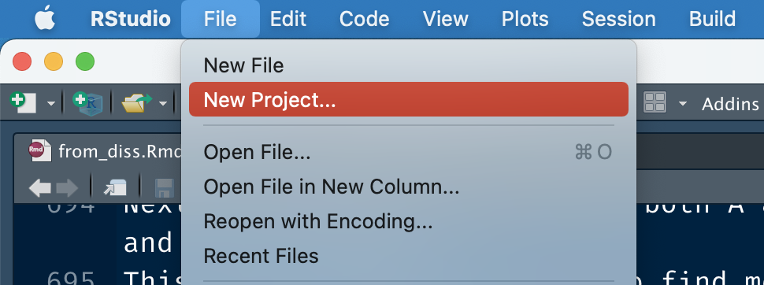

I’ve been settling in at my new job at the Language Development Lab at HKU, which I started physically in March 2021.
I will soon do an update on my time in Hong Kong since then, but this post is written with future me in mind.
A big part of my job is to work out the practical implementations of experiments, and that has thus far involved managing the project structure, designing psychopy experiments, and post-experiment analysis in R.
This seems like a nice trilogy of technical posts, and I hope to deliver to you (and future me).
Today’s special on the menu is automating the set-up of a project.
Why worry about this
Most people that are not very code minded have a vague idea of what a folder on their computer should look like and will let the structure of the subfolders automatically emerge.
Perhaps you tell yourself you will remember which version is the “real final one” and that some of the figures are in that other folder somewhere else on your computer in that one powerpoint slide and that some data can be found under a rock, if you look closely, and oh no it was not the final version after all and you need to make some changes so you add a date, then go find some more data and then remember that maybe if you change a little bit here and there it might be a better version but it’s on the same date, so now it’s today’s date but with an ‘a’ behind it so you will remember and then you’re kinda sure it’s the final-final version so you save it but when you come back next week it turns out there is an even finaler version but then luckily you’re finished.
via GIPHY
You come back to that document because there was something in it and luckily you still have all versions on your computer but which version is “the real final version”?
Joost might know it.
All you find is the following structure:

And even though the post this picture was featured on lists some great tips to avoid the most important versioning issues – I am also privy to using DATE extensions when working with other people in MS Word, e.g., “paperstudy_20210512.docx” – the burden can be alleviated by using a version control system like github.
I’ve done that for my dissertation and it has been very useful to retrieve older sections, but it did make revisions and comments from my supervisor, who preferred MS Word, more difficult, as we had to settle on PDF and the comment system there.
There is less friction with the track-changes and comment functions in MS Word than with PDF, but I think I would still prefer a versioning system.
Anyway, an organically grown folder structure may be clear in the moment, but your future self will curse you, or even worse, hex you.
The answer to avoiding a lot of future project pain is having a structure that is easy to set up, and is flexible to suit a particular project’s needs.
Best practices
Just googling for something like ‘R project structure best practices’ will result in a number of very interesting blogs that advocate what a project folder could should look like.
For instance, Nice R Code shows that a good project layout ensures the integrity of the data, the portability of the project, and the support for the future usage.
There’s also Krista Destasio’s best practices in R or an example directory structure on Very statisticious.
For me, the importance of having a decent structure kicked in about 1.5 years ago, when I did a massive overhaul of my dissertation folder after seeing Jenny Bryan talk about project-oriented workflows, and I wished I had started with a clear structure from the beginning.
And now I can’t really see myself not making a somewhat clear structure from the beginning.
So what does my own best practice look like?
It will be something close to the structure in this screenshot (which I will be building in today’s post, so stay tuned for that).

As you can see I have quite a number of folders and files, from the getgo.
First there is the Rproj file (here ABB.Rproj).
This ensures I can use my project-oriented workflow and keep track, and also connect the code to github if I so desired and I usually desire so.
Next is the README.md file, a typical file in which you write important information you want other people to read.
This is a useful piece of documentation, but if you’re not into filling that out in the beginning that’s okay too; it doesn’t take up much space lol.
Our first folder is the data/ folder, which has two subfolders: data/raw/ and data/processed/.
The main idea is that the raw/ folder contains original data you bring to the analysis, while the processed/ folder acts as a dumping ground for intermediate data files, not necessarily output.
The processed/ folder is a quite new structure for me, so I don’t know if I’m going to keep it around.
Then we have the documents/ folder, which should contain supporting documents, maybe some crucial papers, or a figure that’s important for the argument.
Next figures/ will eventually contain figures generated by code or in powerpoint, or whatever fancy software you wish to use, like photoshop.
It’s useful to have this as a separate folder because some journals will ask you to submit the figures separately.
Then there are the notes/, a place for random notes and observations.
There is output/, which ideally consists of the output data that will see the light of day in a repository, cleaned and ready for analysis.
In my conception, that means that output/ can also contain data to be read in again in a final representation of the script.
Next we have paper/.
This is where I keep different versions of the paper, ideally coded with a date as mentioned above.
There is the previous/ folder, in which I will periodically move older versions of the paper we don’t need in the moment but may want to keep around just a little bit longer.
It also acts as a kind of bin, tbh.
And finally there is the scripts/ folder, in which I would store all .R, .Rmd and .py or what have you files.
Note that this structure is completely flexible and is bound to change for every project.
For instance, there may be a replication component, so it is good to have a separate folder for stimuli or figures from that paper (perhaps under documents/ but hey, you do you boo).
Or if you have an experiment, like I find myself these days with Psychopy, that inevitably comes with a psychopy/ folder.
So, are we good on the idea that 1) it is beneficial to work with projects? and 2) the initial project structure should something like the picture above?
Okay, time to move on to the next step: workflow and automation.
1) Version control - github
I think it is clear by now that in most cases I would advocate for a version controlled project.
That usually means I would start on Github to create a new project, as such:

Then fill out the information for your new project.
I like to start with a private repository, but that’s up to you.
I would suggest adding the README file and also a .gitignore.

After the project is started, if you’re on a Mac, go to the .gitignore dotfile and add the following to that file and save it.
This will make sure that the very annoying .DS_Store files that a reviewer commented on in the past, won’t show up in the project.
(What are .DS_Store files anyway and why do they keep appearing????)
# .DS_Store
.DS_Store
Okay, now you’re all set for step 2.
2) Version control - local
Now, open Rstudio, and create a new project.

Next, click on version control with git:

Fill out the details and open in new session:

If you don’t want to use github or a similar hub or lab for doing version control, I would at least do it locally.
In that case you choose “New Directory” (recommended) or “Existing Directory” (not recommended) for making the folder with its Rproj file.
3) Add the folder structure
Now you have something like this (I turned on the normally invisible dotfiles like .gitignore so you can see their presence):

Quite barren, isn’t it.
Now comes the trick to avoid having to manually make new folders.
Click on ABB.Rproj (or whatever you named your project folder, followed by .Rproj).
This will open up Rstudio.
Make a new script or Rmarkdown file and run the following code:
library(here)
library(fs)
dir_create(here("data", "raw")) # raw data
dir_create(here("data", "processed")) # intermediate data
dir_create(here(c("scripts", # storing all .R, .Rmd, .py files
"figures", # output figures
"output", # output files
"previous", # previous versions keep for record
"paper", # current versions of the document
"notes", # random notes
"documents" # supporting documents
)
)
)
Voilà, the structure has been generated in the right way.
Thoughts on here and fs
I cannot stress how important the anchor of Rproj files has been to my workflow, whether or not I actually run code for a particular project.
In the not so distant past, R code usually would start with lines like the following to make sure you’re in the right working directory (getwd() and setwd()).
# mac
setwd("C:/Thomas/dropbox/here/is/my/unique/folder")
# windows
setwd("C:\\Thomas\\dropbox\\here\\is\\my\\unique\\folder")
rm (list=ls())
Luckily, we were warned not to do so by Jenny Bryan.

And even luckierly, we can just make sure there is an Rproj file in our project folder, and then use the here package to have a transportable folder that will work both on Windows and Mac (and I guess Linux?) to navigate the structure of folders and files.
The fs package is a better version for managing paths and directories than Base R.
The first function (in combination with here) that I find myself using a lot is:
datalist <- fs::dir_ls(here("data", "subfolder_with_lots_of_files"),
regexp = ".csv$",
recurse = TRUE)
This will get you a vector of all .csv files you want to loop over, and it is easy to write and to remember.
The second function that I like helped me draw the diagram of the folder structure given above:
dir_tree(here())
Yes, it was that simple to make that figure.
Anyways, future me and other readers for who this is helpful, now I have a place to come copy the code chunk for generating the project setup and also a record of my current best practice of starting a project.
More posts to follow!